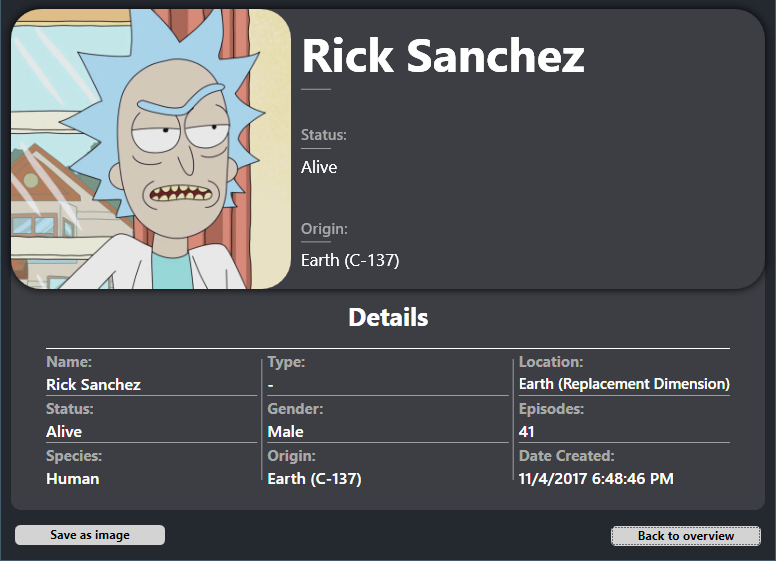

Rick And Morty Tool
Rick And Morty Characters - Tool Development @ DAE
Introduction:
For the course Tool Development in my 2nd year at DAE
Howest,
For the C# part we had to make a tool which retrieves information from an
online API service.
I choose the Rick And Morty API.
Download Executable
Why does this match the DAE/GD profile?
The Rick And Morty series is really popular within the Gaming & Comics community. This API includes all the Rick And Morty characters, including images, and their associated episodes. These episodes are then linked with another JSON request. Each episode also includes all associated characters.
I will focus on visualizing the characters and viewing options, as well as creating a different page showing the selected character's details.
Navigation instructions
Overview Page

The page has several options:
Data Source

This application has the option to switch between Online data or Offline data. You can switch between both options using the "Data Source" dropdown button. You won't see a difference, this is just useful when you're not connected to the internet to still be able to preview the characters.
Sorting
You can quickly show/hide dead or alive characters, and you can also sort the characters depending on which sorting type you selected.
Page Navigation
Using these buttons, you can switch to the next page or go back to the previous page. The max amount of pages also gets updated according to your viewing options.
Search Bar
Here you search for specific characters by their name. Enter your search query and click search. To reset the search results, search with an empty name.
Show Dead/Alive
These options can be used to quickly show/hide the "dead" or "alive" characters. Keep in mind, some characters have an unknown status, so those will be hidden in both options. Selecting an option when another option is selected will cancel that one out. Selecting none of these will revert the results back to the previous characters.
Show Details

When you select a character in the list and press this button, it will take you to the detail page.
Detail Page
Back to Overview
Pressing this button will take you back to the overview page.
Save as Image
This can be used to save the current page as an image. The image is stored in the "saves" folder located in the executable folder. After saving, the corresponding folder will also open.
Download Executable